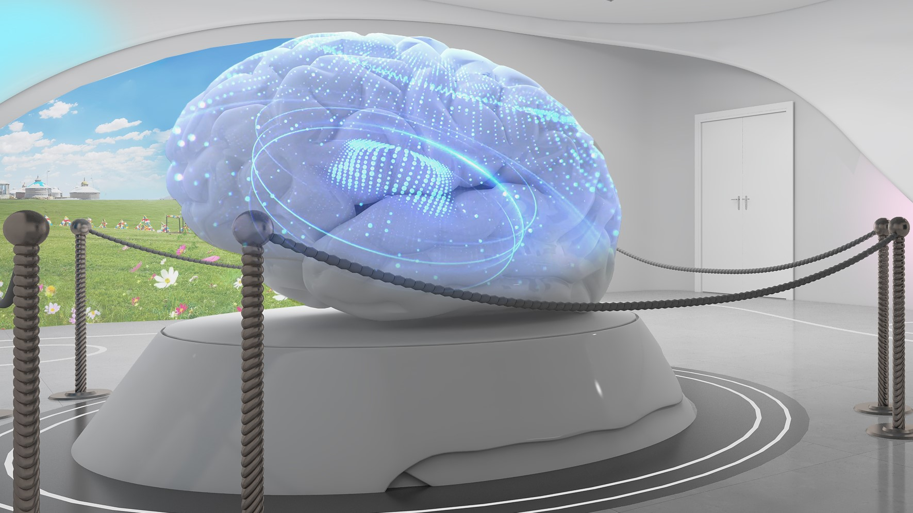

展厅简介
感官体验中心始建于2023年，位于国家乳业技术创新中心二层展览区东南，是全世界首间使用实际科研仪器搭建的感官体验研究互动展厅。该中心既是一个感官体验的互动展厅，也是一个能够实际做感官研究的实验空间。展区由蝶舞、飞花、超脑、止水、幻境、镜心、揭秘感官等7处互动展项，将感官研究中所使用到的眼动仪、表情分析系统、脑电仪、多导生理仪等设备与艺术设计有机融合，形象生动的向观众介绍仪器在感官评价研究中的功用。

由于项目使用实际科研仪器搭建，在操作流程与维护保养方面相对普通展厅较为复杂。为了更好的服务研究与展览，诺达思团队整理制作了本使用说明手册。希望该手册能够在使用人员了解展厅与展项的使用方法和排障流程的过程中提供帮助。
Information in this document is subject to change without notice and
does not represent a commitment on the part of Noldus Information
Technology BV. The software described in this document is furnished
under a license agreement. The software may be used or copied only in
accordance with the terms of the agreement.
Copyright © 2022 Noldus Information Technology BV. All rights
reserved. No part of this publication may be reproduced, transmitted,
transcribed, stored in a retrieval system, or translated into any other
language in whole or in part, in any form or by any means, without the
written permission of Noldus Information Technology BV.
FaceReader is a registered trademark of Noldus Information Technology BV.
September 2024
For FaceReader verson 9
Noldus Information Technology BV
International headquarters
Wageningen, The Netherlands
Telephone: +31-317-473300
E-mail: info@noldus.com
Noldus (Beijing) Information Technology Co., Ltd.
Asia headquarters
Beijing, China
Telephone: +86-10-84852246
For addresses of our other offices and support, please see our web site www.noldus.com
最后更新于 2024 年 09 月 26 日。
开闭馆与日常流程
开馆之前
确保设备间配电箱总闸处于 ON 状态。
iPad有足够的电量，且链接的Wi-Fi名字是“ZF”。
连接镜心展项发射器的EDA口和手板背后的电极，并将Transmitter电源拨至 ON。
打开调试间电脑电源。
开馆流程
基本操作
- iPad的
controlAPP中，于首页点击“开馆” 只点一次即可
设备会依次打开
- iPad的
备注
这里的 control 不是指系统设置，而是控场APP的软件名。

额外设置
- 调整灯光
入口侧为暗场（关闭筒灯）
关闭超脑照明（关闭超脑）
打开标题射灯，门楣发光字
展项调整和后台程序运行
默认灯光设置

原则上入口半场投影多，为暗场；出口半场屏幕多，为亮场
项目 |
配置 |
|---|---|
大门Logo |
开 |
标题字灯 |
开 |
环境射灯 |
开 |
超脑 |
开 |
镜心灯膜 |
开 |
筒灯 |
开 |
其它场合（如清扫）可根据实际需求自由调节
展览时控制室内应保持关灯，以保证单面镜效果。
开馆程度与互动关系
程度 |
可互动展项 |
模拟展示项目 |
|---|---|---|
基础（游客模式） |
|
|
进阶（团客模式） |
|
|
全功能（领导/专家/重要接待模式） |
|
闭馆流程
基本操作
- iPad首页点击“闭馆”
只点击一次即可
设备会依次关闭
额外设置
- 关闭设备，搬回设备
Transmitter开关至OFF
- 设备充电（如需要）
脑电帽（USB-C）
iPad（Thunderbolt）
Transmitter闪烁黄灯，关机充电至充电器不闪灯
远程桌面的使用

下文中，针对各展项的操作，如无特别说明，均为在远程桌面软件中连接到对应的主机后，在对应主机的窗口中进行的操作。

使用目的
节约显示屏，方便主机在机房机柜集中管理
打开/调整无法自动配置的一些后台设置
遇到bug或异常时进行修复
使用方法
- 打开测试间的台式机
确保连接的是名为“ZT”的无线网
双击打开桌面的VNC Viewer程序
各展项主机的初始配置已做好
双击相应位置，即可打开对应主机
详细参数
展项名称 |
IP地址 |
账号 |
密码 |
|---|---|---|---|
序言 |
192.168.1.102 |
||
蝶舞 |
192.168.1.103 |
||
飞花左 |
192.168.1.104 |
||
飞花右 |
192.168.1.105 |
||
超脑 |
192.168.1.106 |
||
止水 |
192.168.1.107 |
||
幻境 |
192.168.1.108 |
||
镜心左 |
192.168.1.109 |
||
镜心右 |
192.168.1.110 |
蝶舞

【展馆】展项介绍
眼睛是心灵的窗口，注视是注意的体现。蝶舞展项借助眼球追踪技术，准确测量消费者下意识的注意， 智能分析视觉偏好，揭示了包装与广告最吸引人的要素。
仪器应用
产品包装的设计，投送广告的比较，都面临着这样的评价难题：如何知道哪里吸引消费者， 客观衡量消费者关注哪里。传统问卷和量表受主观因素影响，并且无法测量下意识的倾向。
眼动仪能够较为有效地回答上述问题。通过瞳孔角膜反射技术，眼动仪可以建模消费者的眼球，并测量消费者的视线方向和落点，总结出对某一事物的注视次数、持续时间、先后次序， 瞳孔直径大小等信息，揭示上述问题的答案。
互动艺术设计
初始屏幕全黑，有蝴蝶飞舞。
- 坐在桌前紧盯展品，仪器捕捉到注视，屏幕出现展品图和注视点。
注视点随着注视落点的变化而移动，注视点周围蝴蝶飞舞。
观察蝴蝶的去向，即可了解您现在看向产品何处。
小技巧
如何提高精度？ 保持面部所在平面与眼动仪采集面平行，不戴镀膜眼镜，匀速扫视。
展项操作流程
随开馆自动启动，正常情况无需操作。
背景图片替换方法
- 找到当前蝶舞程序的路径。
通过远程桌面，连接到蝶舞计算机
同时按下Windows徽标键和R，在运行栏中输入
shell:startup，回车后打开自启动文件夹右键蝶舞快捷方式，找到程序路径

在
蝶舞程序路径/蝶舞_Data/StreamingAssets/下找到图片，如4.png- 更换图片
必须是
.png格式必须是同一宽高比
尽量保持同一分辨率
备注
这个 shell:startup 是什么？
是快速打开自启文件夹的命令。 软件经常有很多版本，所以我们并不提供具体某个固定的路径，而是每次更新自启文件夹中的快捷方式，指向当前版本的程序。
想要快速进入自启文件夹，可以同时按下 Windows + R 键，在唤出的运行程序打开栏中，输入 shell:startup，即可进入。
【科研】仪器介绍
眼动仪是用于收集注视位置、注视方向、眼球运动数据的高精密仪器。展位所使用的眼动仪为 Tobii EyeTracker 5 遥测式眼动仪，是世界眼动追踪龙头企业——瑞典 Tobii 公司的最新款消费级眼动仪。

EyeTrakcer5 技术规格
参数 |
规格 |
|---|---|
尺寸 |
285 x 15 x 8.2 毫米 |
工作距离 |
45 - 95 厘米 |
支持的屏幕尺寸 |
15" - 27" (16:9) |
在研究中，会使用精度更高的科研级产品—— Tobii Pro Fusion 遥测式眼动仪和 Tobii Pro Glasses 3 头戴式眼动仪。
Fusion 技术规格
参数 |
规格 |
|---|---|
尺寸 |
373 x 180 x 137 毫米 |
工作距离 |
50 - 80 厘米 |
支持的屏幕尺寸 |
20" - 31" |
头部活动空间 |
45 x 30 厘米 |
准确度与精确度 |
0.3°& 0.04°RMS |
采样率 |
30、60、120、250Hz |

Glasses 3 技术规格
参数 |
规格 |
|---|---|
眼镜尺寸 |
153 x 168 x 51 毫米 |
控制盒尺寸 |
130 x 85 x 27 毫米 |
场景摄像机视野 |
106 deg. 16:9 |
电池记录时间 |
105分钟（3400mAh） |
眼动传感器数量 |
4个（每只眼睛2个） |
采样率 |
50、1200Hz |
测量原理
人眼的视角能够达到220°之广，但是实际真正能看清的，只有视角正中的几度。 这是由于在视网膜上，大部分位置分布的视杆细胞只对明暗和运动较为敏感。而 对于事物细节和颜色较为敏感的视锥细胞，仅分布在称为“中央凹”的一小片区域中。 这就使得如果想看清一片事物，人需要不断转动眼球，脖子，乃至身体朝向，让 中央凹-瞳孔方向的射线能够落在事物的不同位置，而这也就是所谓的“注视”，也是 注意力的外显。
眼动测量有着很多原理，如今使用最广泛的原理被称为“瞳孔角膜反射技术”。通过对 瞳孔及投射到眼球上红外光点的测量，结合三位眼球建模，能够算出当前时刻瞳孔的朝向。 与现实建模相匹配，即可计算出在特定平面上视线的落点位置，即注视点的坐标。
使用方法
此处仅简略说明使用流程。具体操作细节请遵循培训内容，或查阅各软件说明书。
连接眼动仪至电脑。如使用USB-C转USB-A转换器，则需要额外连接电源。
打开
Tobii EyeTracker Manager软件，建立当前拍摄环境档案。使用校准功能，调整座椅高度，座椅距屏幕距离，屏幕角度。
打开
Tobii Pro Lab软件，在实验设计中添加相应刺激及环节。填写被试信息及变量，开始采集，进行校准。
完成实验
在分析界面导出带注视点的视频、热区图、注释次序图等可视化内容
框选AOI，在
Metrics界面导出与AOI相关的数据在
Data Export界面导出原始数据
备注
AOI 是 Area of Interest 之意，即兴趣选区。
安装好SD卡及电池，连接控制单元与眼镜，长按电源区域开机。
电脑连接至控制单元打出的WiFi（TG03B-XXXXXXXXXXX）。
打开
Glasses 3 Controller软件，获取实时画面。调整曝光模式，填写被试姓名，校准眼动仪。
开始采集。
采集结束后关机，取出SD卡。
打开
Tobii Pro Lab软件，创建Glasses项目，导入Glasses 3文件。在分析界面导出带注视点的视频。
导入实拍照片，将视频中的注视点映射到实拍照片，并基于此导出热区图、注释次序图等可视化内容
框选AOI，在
Metrics界面导出与AOI相关的数据在
Data Export界面导出原始数据
飞花

【展馆】展项介绍
面部表情是最为外露的情绪。飞花环节使用AI面部表情技术，直观反映情绪的喜怒哀乐。
仪器应用
味道、口感、气味，乃至包装与广告的设计，产品每个环节都会带来不同的感官体验， 影响内在情绪变化。比如糟糕的气味让人皱眉，好喝的味道让人眯起眼睛。 通过面部表情分析系统，研究人员能够客观测量到消费者的基础情绪， 以及微表情的变化。
互动艺术设计
效价（正负）和唤醒度（强弱）这两个指标分别对应画面中的色彩变化和花朵盛开。 展项通过实时动画演示，生动展示面部表情测量的结果。
- 效价（Valence）
正向情绪：草原色彩斑斓
负向情绪：草原昏暗失色
- 唤醒度（Arousal）
表情逐渐活跃：花开，花飞
展项操作流程

- 随开馆后台软件会自动启动
- FaceReader
面部表情分析系统
摄像&后台数据分析， 最大时长2小时
需 手动开始 分析
- FaceReaderExternalControlSample
FaceReader软件的API示例程序
作为FaceReader和动画程序之间的“数据桥梁”
- 飞花动画程序
控制呈现在投影上的效果

- 添加采集
点击小人加号图标，添加被试
点击摄像头图标，添加采集摄像头
勾选“用作默认摄像机”
默认参数已填好，点击确定

备注
默认参数丢了怎么办？ 请在相应栏位手动输入以下内容：
左摄像头IP地址
http://192.168.1.129/ISAPI/Streaming/channels/102/httpPreview右摄像头IP地址
http://192.168.1.130/ISAPI/Streaming/channels/102/httpPreview账户 admin；密码 Noldus123；格式 MJPEG
- 启动分析
点击分析按钮
观察右侧的时间，确认分析正式开始，最大时长2小时
切换到
FaceReaderExternalControlSample程序点击
Connect to FaceReader按钮，连接到FaceReader点击
Enable Detailed Log Receiving按钮，开启实时数据接收站在地贴上，看向摄像头，调整位置，做表情，看面部能否正确被识别，效价曲线跨越正负时能否引起画面变化
将
FaceReader和FaceReaderExternalControlSample程序最小化。

- 分析的重启动
虽然软件的最大采集时间为2小时，但实际使用过程中， 采集超过30分钟会出现画面延迟增大的情况，影响展项体验效果。所以在使用中， 尽可能在迎展前再启动采集。视实际接待情况和操作熟练度，提前2-10分钟为宜。
重新采集的方法即为重复2-2到2-4的步骤。如果觉得当下已经不灵敏/延时高，可以直接点击采集按钮停止采集，再重复2-2到2-4部分的操作。

小技巧
如何提高识别精度？
站准地标，面朝摄像头。非双人模式下保证摄像头拍摄范围内只有一个人。有卡顿的话重启采集。
【科研】仪器介绍
情绪是人类生活的一个重要方面。 它们本能地影响我们的行为和决定。
我们的脸通常是最好的指标，因为我们的面部表情不用说一句话就能传达情绪，并且可以被其他人观察到。
Noldus FaceReader 是世界上第一款商业化的专业面部表情自动分析系统。
该系统能够准确、可靠地识别面部表情，进而清楚地反映出不同刺激对情绪的影响，
来更好地提供客观的情绪评估。
测量原理
- “人类情绪表达方式由存在于其他动物中的类似行为演化而来。”
—— 查尔斯·达尔文，《人类和动物的情感表达》，1872
面部表情是传递个人情绪状态信息的最有效方式。与此同时，这些表情却很难进行客观测量。 以保罗·艾克曼（P. Ekman）为代表的科学家为此开发了面部动作编码系统（FACS）。 面部动作编码系统以动作单元（Action Units, AUs）为基础，可以理解为面部肌肉活动的最小可见单元。它们的活动会产生面部表情的变化。 大量研究表明，某些动作单元的组合和情绪表达有关，其中愤怒、厌恶、恐惧、悲伤、惊讶和快乐六种情绪时的表情具有跨文化，跨人种的一致性；且与生俱来，无需学习，因此这六种表情被称作基础表情。
软件通过先进的深度学习引擎，可自动识别并跟踪人脸，同时基于面部轮廓进行定位建模，捕捉面部AU动作。 其中21个动作单元的强度变化被用作确定6种基本情绪。
使用方法
此处仅简略说明使用流程。具体操作细节请遵循培训内容，或查阅软件说明书。
连接摄像头，打开
FaceReader软件。在软件中创建被试，并根据需求，添加实时采集摄像头或导入已有视频/图片。
编辑被试信息，调整分析参数，对中性情绪进行校准。
开始分析
通过多窗口查看可视化数据
在分析面板对数据进行整理分析
导出统计数据与原始数据
超脑
【展馆】展项介绍
大脑是思维的器官，脑电图是大脑活动的整体表现。乳业国创中心大胆运用尖端设备，立体展现大脑皮层活动，揭示不同脑区活跃区别。
仪器应用
大脑作为神经中枢，是一切感官信息汇总的地方。借助便携脑电仪，研究人员可以测量大脑，尤其是大脑前额叶、颞叶、枕叶皮层的活动。 这些区域主要反映决策过程，以及听觉和视觉刺激的影响。避免真实感受到语言加工中信息的损失，解决“感受得到，形容不出”；“形容得出，衡量有误”的问题，直接从感官处理中枢为研究人员获得第一手结果。
互动艺术设计
在专业人员的指导下，佩戴好脑电帽，如果不直接品尝产品，可以发挥想象喝下牛奶，闻到乳香。这时大脑模型上的光影变化就反映出您的大脑正在活跃，16个测量位，哪个区位活跃，哪个区位就会变大变明亮。
展项操作流程
随开馆后台软件会自动启动
如果不需要测量展示，请直接跳到第7步（不建议）
在超脑的远程桌面内，按下Windows徽标键，选择脑电帽的程序
Emotiv Launcher。- 按照实际使用情形
实际佩戴测量。盐水电极安装结束后，开机并佩戴脑电帽。点击软件中对应脑电帽右侧三点，展开菜单，并点击
Connect。虚拟测量演示。点击软件中的虚拟脑电帽
Simulated Device，点击右侧三点展开菜单，点击Power ON和Connect。

当绿字（脑波质量）出现后，说明连接成功。
按下Windows徽标键，在任务栏中的超脑程序右键-关闭窗口。
打开自启文件夹，双击超脑，重启程序。
备注
自启文件夹在哪里？
软件经常有很多版本，所以我们并不提供具体某个固定的路径，而是每次更新自启文件夹中的快捷方式指向。
想要快速进入自启文件夹，可以同时按下 Windows + R 键，在唤出的运行程序打开栏中，输出 shell:startup，即可进入。
在iPad的控制程序中，点击 媒体控制 - 超脑 - 领导模式。此时大脑的光点会随着脑电帽/虚拟脑电帽的数据开始变化。
【科研】仪器介绍
脑电仪是一种非侵入式性记录大脑皮层电生理活动的设备。展位所使用的型号是美国Emotiv公司生产的便携脑电帽 Epoc X。
该型号脑电仪轻便小巧，使用方便，测量区域和内建参数满足感官相关测量需求。

{kind=link}
{kind=link}
Epoc X 技术规格
- 尺寸:
90 x 150 x 150 毫米
- 电极数量:
14通道
- 采样率:
128Hz/256Hz
- 状态指标:
参与度
兴奋度
专注度
兴趣度
放松度
压力度
测量原理
大脑的电生理测量位置和测量方法有很多，最常见的是脑电图（Electroencephalogram, EEG）。
大脑的神经元在活动中产生突触后电位。在头皮记录这些电信号，会得到脑神经细胞的电生理活动在大脑皮层或头皮表面的总体反映。 将脑部神经元的自发性生物电活动加以放大百万倍，以脑电活动的电位作为纵轴，时间作为横轴，把时间与电位的相互关系记录下来，就是常见的脑电图了。
使用方法
此处仅简略说明使用流程。具体操作细节请遵循培训内容，或查阅软件说明书。
- 浸湿电极毡垫。
- 将电极毡垫放进容器中，加入导电液浸泡。
- 成品可选择隐形眼镜护理液、洗鼻液、生理盐水
请勿使用隐形眼镜清洁液或消毒液
安装前挤除表面多余液体。

小技巧
自制导电液可以使用生理盐水，或0.7%-4%氯化钠溶液做基础，添加少量（体积计<4%）消毒剂（如70%浓度异丙醇），及几滴甘油减缓蒸发速度。
将浸润的电极毡垫塞到每个点击孔位中，确保安装牢固就位

警告
安装时请直上直下安装，不要斜着先按一边下去，再把另一边顶进去。 这样会加剧电极毡垫变形，缩短使用寿命。
将USB接收器插入电脑（展厅电脑已插入），拿下脑电帽上的电源键。“嘀”一声响后，脑电帽指示灯亮起。片刻后，USB接收器上的第二个LED开始闪烁，提示已建立数据链接。

- 佩戴脑电帽
将脑电帽从头顶轻柔地，自上而下地戴在被试头上。
调整脑电帽。橡胶垫位于耳朵后方突起的骨头上（乳突）。
整体前旋，使得前侧电极AF3和AF4位于眉毛上方约三指宽的位置。
头带有两个位置。请确保程序中的设置和实际位置相同。

小技巧
请要求被试来之前一晚洗头，不要有过多头油。同时不论长发短发，请尽量让电极接触头皮和发根。 可以备一把细长柄的尖尾梳，方便挑理头发。
注意
并不是橡胶垫在哪，哪里都可以成为参考电极。参考电极的位置只有以下两组：
橡胶垫在乳突（M1/M2）时，P3/P4是参考电极。
橡胶垫在P3/P4时，乳突（M1/M2）是参考电极。

打开
Emotiv Launcher软件，连接上述的脑电帽。查看接触质量。接触质量（Contact Quality, CQ）代表电极和头皮之间连接通路的质量，反映各通道之间的阻抗情况。正常情况下应为全绿100%。如有话或者红色，则需要调整电极，或中途进行补液。


在软件中查看脑波质量。脑波质量（EEG Quality, EQ）代表测得的脑波质量。这一指标由软件内建的机器学习算法进行评估。在戴好脑电帽后，需要让被试静息一阵后方可稳定下来。一旦稳定后，即可开始测量。
在软件中，进行采集。按照需要进行数据整理和导出。
当天实验结束后，请取下所有毡垫，并使用清水冲洗，去除多余盐分。待毡垫变干后再存放。存放在盒子时，请确保脑电仪的Logo正置，否则乳突电极朝上会被压弯变形。
小技巧
建议使用过的毡垫和未使用的分开放置。视损耗程度分批次使用。
警告
不当使用会缩短毡垫使用寿命，并造成电极触头电镀层的腐蚀。
止水

【展馆】展项介绍
互动体验，活跃之余，止水环节帮助您平心静气。AI脑波分析技术，精神状态智能评估，确保消费者内心平静，归于本我。
仪器应用
为了保证感官品评的准确性和可重复性，感官品评环节要求品评员在整个测试环节中心平气和。传统上，会通过问卷的方式评价品评员的精神状态。借助脑电仪，研究人员可以获得更真实的精神状态结果，并且协助训练品评员调整情绪。通过内置AI算法，直接得出品评员状态的各项数值，包括沉浸程度、唤醒程度、专注程度、放松程度、适应程度及兴趣程度。同时，也有助于安神助眠类功能乳产品的辅助开发和效果验证。
互动艺术设计
在专业人士指导下，佩戴好脑电帽后，深呼吸，放松心情，观察水流向下状态，如果水流平直，说明您基本恢复平静，如果湍急，充满杂念，需要放松。
展项操作流程
随开馆后台软件会自动启动，如不需要实际测量和概念展示，则无需操作。
若需要概念展示，请在参观过程中，使用iPad的控制程序，在
媒体控制-止水-开始测量-游客模式下，按照讲解节奏，分别点击平静、波动、汹涌按钮。

如果需要实际测量，请遵循以下步骤。
在止水的远程桌面内，按下Windows徽标键，选择脑电帽的程序
Emotiv Launcher。电极毡垫安装结束后，开机并佩戴脑电帽。点击软件中对应脑电帽右侧三点，展开菜单，并点击
Connect。当绿字（脑波质量）出现后，说明连接成功。
按下Windows徽标键，在任务栏中的止水程序右键-关闭窗口。
打开自启文件夹，双击止水，重启程序。
备注
自启文件夹在哪里？
软件经常有很多版本，所以我们并不提供具体某个固定的路径，而是每次更新自启文件夹中的快捷方式指向。
想要快速进入自启文件夹，可以同时按下 Windows + R 键，在唤出的运行程序打开栏中，输出 shell:startup，即可进入。
在iPad的控制程序中，点击 媒体控制 - 止水 - 领导模式。此时大脑的光点会随着脑电帽/虚拟脑电帽的数据开始变化。
【科研】仪器介绍
脑电仪是一种非侵入式性记录大脑皮层电生理活动的设备。展位所使用的型号是美国Emotiv公司生产的便携脑电帽 Epoc X。
该型号脑电仪轻便小巧，使用方便，测量区域和内建参数满足感官相关测量需求。
Epoc X 技术规格
参数 |
规格 |
|---|---|
尺寸 |
90 x 150 x 150 毫米 |
电极数量 |
14通道 |
采样率 |
128Hz/256Hz |
状态指标 |
参与度 |
状态指标 |
兴奋度 |
状态指标 |
专注度 |
状态指标 |
兴趣度 |
状态指标 |
放松度 |
状态指标 |
压力度 |
测量原理
大脑的电生理测量位置和测量方法有很多，最常见的是脑电图（Electroencephalogram, EEG）。
大脑的神经元在活动中产生突触后电位。在头皮记录这些电信号，会得到脑神经细胞的电生理活动在大脑皮层或头皮表面的总体反映。 将脑部神经元的自发性生物电活动加以放大百万倍，以脑电活动的电位作为纵轴，时间作为横轴，把时间与电位的相互关系记录下来，就是常见的脑电图了。
使用方法
此处仅简略说明使用流程。具体操作细节请遵循培训内容，或查阅软件说明书。
- 浸湿电极毡垫。
- 将电极毡垫放进容器中，加入导电液浸泡。
- 成品可选择隐形眼镜护理液、洗鼻液、生理盐水
请勿使用隐形眼镜清洁液或消毒液
安装前挤除表面多余液体。
小技巧
自制导电液可以使用生理盐水，或0.7%-4%氯化钠溶液做基础，添加少量（体积计<4%）消毒剂（如70%浓度异丙醇），及几滴甘油减缓蒸发速度。
将浸润的电极毡垫塞到每个点击孔位中，确保安装牢固就位
警告
安装时请直上直下安装，不要斜着先按一边下去，再把另一边顶进去。 这样会加剧电极毡垫变形，缩短使用寿命。
将USB接收器插入电脑（展厅电脑已插入），拿下脑电帽上的电源键。“嘀”一声响后，脑电帽指示灯亮起。片刻后，USB接收器上的第二个LED开始闪烁，提示已建立数据链接。
- 佩戴脑电帽
将脑电帽从头顶轻柔地，自上而下地戴在被试头上。
调整脑电帽。橡胶垫位于耳朵后方突起的骨头上（乳突）。
整体前旋，使得前侧电极AF3和AF4位于眉毛上方约三指宽的位置。
头带有两个位置。请确保程序中的设置和实际位置相同。
小技巧
请要求被试来之前一晚洗头，不要有过多头油。同时不论长发短发，请尽量让电极接触头皮和发根。 可以备一把细长柄的尖尾梳，方便挑理头发。
注意
并不是橡胶垫在哪，哪里都可以成为参考电极。参考电极的位置只有以下两组：
橡胶垫在乳突（M1/M2）时，P3/P4是参考电极。
橡胶垫在P3/P4时，乳突（M1/M2）是参考电极。
打开
Emotiv Launcher软件，连接上述的脑电帽。查看接触质量。接触质量（Contact Quality, CQ）代表电极和头皮之间连接通路的质量，反映各通道之间的阻抗情况。正常情况下应为全绿100%。如有话或者红色，则需要调整电极，或中途进行补液。
在软件中查看脑波质量。脑波质量（EEG Quality, EQ）代表测得的脑波质量。这一指标由软件内建的机器学习算法进行评估。在戴好脑电帽后，需要让被试静息一阵后方可稳定下来。一旦稳定后，即可开始测量。
在软件中，进行采集。按照需要进行数据整理和导出。
当天实验结束后，请取下所有毡垫，并使用清水冲洗，去除多余盐分。待毡垫变干后再存放。存放在盒子时，请确保脑电仪的Logo正置，否则乳突电极朝上会被压弯变形。
小技巧
建议使用过的毡垫和未使用的分开放置。视损耗程度分批次使用。
警告
不当使用会缩短毡垫使用寿命，并造成电极触头电镀层的腐蚀。
幻境

【展馆】展项介绍
虚拟现实，带来幻境展项的研究场景，开创感官研究新纪元。VR场景和眼动追踪，构建品尝、购物一站式体验，幻境展项带您滑进牛奶冰雪大世界。
仪器应用
现实中实验的场景搭建及开展往往受到时间、场地、资金、工程难度等方面制约，研究人员往往无法随心所欲地开展实验。上述问题随着VR技术的普及，将不复存在。借助三维建模，研究人员可以自由地搭建、修改、测试实验环境，在任何时间、地点开展测试。同时，通过眉心位置的眼动传感器，研究人员可以获得消费者在虚拟空间中的视线方向和注视点，提升数据维度的同时回答更多问题。
互动艺术设计
营养素滑雪大冒险
佩戴好VR头显后，尝试用视线开始游戏，并捕捉营养素。注视作为注意力的外显，下意识捕捉到的是心中更在意的营养素。游戏后通过得分总结，看看您的心底最在意哪种营养素吧？
虚拟货架
佩戴好VR头显后，小心走走看，身边的货架上都摆了些什么？
展项操作流程
随开馆自动启动，正常情况无需操作。
取下头显，站在地贴处，正对屏幕。无需戴上，让头显正面面对屏幕，左右微微晃动。 如果屏幕画面随着一起晃动，即为定位成功。
注意
手扶着的时候不要挡住正面和侧面的小孔。它们是定位信号接收器。
【科研】仪器介绍

VIVE Pro Eye 利用Tobii®眼动追踪技术改进仿真，识别和计算过程，让研究人员能够看到用户所见的场景画面和相应的行动。
设备参数
- 屏幕:
2个3.5英寸OLED
- 分辨率:
单眼分辨率1440 x 1600，双眼分辨率为3K（2880 x 1600）
- 刷新率:
90Hz
- 视场角:
110度
- 注视数据输出频率（双目）:
120Hz
- 精度:
0.5°-1.1°
- 校准:
5点
- 追踪可视角:
110°
- 数据输出（眼球信息）:
时间戳（设备和系统）
注视原点
注视方向
瞳孔位置
瞳孔大小
睁眼状态
测量原理
人眼的视角能够达到220°之广，但是实际真正能看清的，只有视角正中的几度。 这是由于在视网膜上，大部分位置分布的视杆细胞只对明暗和运动较为敏感。而 对于事物细节和颜色较为敏感的视锥细胞，仅分布在称为“中央凹”的一小片区域中。 这就使得如果想看清一片事物，人需要不断转动眼球，脖子，乃至身体朝向，让 中央凹-瞳孔方向的射线能够落在事物的不同位置，而这也就是所谓的“注视”，也是 注意力的外显。
眼动测量有着很多原理，如今使用最广泛的原理被称为“瞳孔角膜反射技术”。通过对 瞳孔及投射到眼球上红外光点的测量，结合三位眼球建模，能够算出当前时刻瞳孔的朝向。 与现实建模相匹配，即可计算出在特定平面上视线的落点位置，即注视点的坐标。
使用方法
此处仅简略说明使用流程。具体操作细节请遵循培训内容，或查阅软件说明书。
连接VR眼动仪至电脑。
打开
Tobii Pro Lab软件，添加VR 360项目。导入全景视频或全景图像。
注意
对于 VR 360 项目，添加到时间轴的媒体文件应为单视角 360 度图像，格式为等角投影，长宽比为 2:1。
填写被试信息及变量，开始采集，进行校准。
完成实验
在分析界面导出热区图、注释次序图等可视化内容
框选AOI，在
Metrics界面导出与AOI相关的数据在
Data Export界面导出原始数据
镜心

【展馆】展项介绍
消费者会不会言不由衷，镜心环节告诉您，主观也许会撒谎，但身体的反应是诚实的。这个环节测量心电、皮肤电、肠胃电，产品食用过程中的深度体验，助力健康产品研究。
仪器应用
传统研究以问卷和量表为主。如何保证被试人员所填为真，筛除“图省事”“应付了事”“乱填”的数据，是一大难点。通过多导生理仪，研究人员可以综合测量被试者的心率、呼吸、皮肤电等指标，衡量神经紧张程度，辅助判断回答真实性。同时，还可以辅助安神助眠类产品的研发和效果测试。
互动艺术设计
模拟测谎
把手放在感应台上的手形标记，会缓缓开启面前的“镜心”大门，根据屏幕显示的问题，心中默默回答。您的回答越接近真实，屏幕中的形象将越发清晰凝实。
惊险体验
把手放在感应台上的手形标记，屏幕上会出现多类易引发心惊动魄的画面。紧张刺激的同时，看看下方的皮肤电曲线，是不是和你一起在“坐过山车”？
展项操作流程
随开馆自动启动，正常情况无需操作。
注意
如使用模拟测谎场景，软件后台对鼠标移动较为敏感。如果在程序运行中通过远程桌面移动鼠标，可能会出现异常。 建议使用该场景时，不进入远程桌面，或启动后尽快退出。
【科研】仪器介绍
多导生理仪是一种读取生理数据的高精密仪器。通过传感器获得身体电信号后，经过生物放大器和滤波器，最终在计算机中进行记录相关数据。

展项中使用到的是BioPac公司的MP160型号。它具有构成灵活，安装方便，测量精准，指标多样的特点。 广泛应用在世界各地的实验室。可测量包括心电、皮电、呼吸、肠胃电等指标。
设备参数
- 通道数量:
16
- 传感器-放大器连接方式:
有线&无线
- 无线信号种类:
心电、皮电、呼吸、脉搏、肠胃电、眼电、血氧、心输出量、温度、足底压力
- 模数转换精度:
16bit
- 引用:
在超过32000篇同行评议的期刊文章和学术文献中被引用
测量原理
生理仪通过不同的电极或换能器，测量身体不同部位产生的电信号，在放大后，通过模数转换、滤波、运算整理后记录在计算机系统中。
使用方法
此处仅简略说明使用流程。具体操作细节请遵循培训内容，或查阅软件说明书。
根据所需指标，组装主机和对应的放大器以及天线。连接电源和至计算机的网线。
在被试身上安装对应传感器和换能器。整理线缆。
生理仪开机，根据指示灯检查放大器和发射器之间的无线连接状态。
在电脑上打开采集软件，根据硬件实际情况和采集需求调整软件设置。
开始采集。
实验结束后停止采集，摘除传感器和换能器。涂导电胶的场合协助被试进行清洁。
数据分析。
常见问题排查
通用
投影仪没画面怎么办？
这个时候我们首先要看对应幕墙的颜色。如果是黑色，多为投影仪没有开，或者长时间没检测到信号自己关了；如果是蓝色的未检测到信号界面，则多为电脑没有正常启动。 检查对应主机。如果没有自启成功，按下电源键，手动开机。
没能正常打开或关闭怎么办？
有的时候，投影机、电脑、灯光可能会出现明明开馆或闭馆了，但是它没有听指令打开或关闭的情况。 这往往是由于网络拥塞导致的。解决方法一般有以下几种：
- 电脑启动关闭异常
如果没能正常启动，进入机房，打开机柜，手动启动对应主机电源。
- 投影仪启动关闭异常
如果开馆闭馆按钮不起作用，则在iPad上点击
设备控制-投影仪，打开或关闭对应的投影仪。
- 灯光启动关闭异常
在iPad上点击
设备控制-投影仪，打开或关闭对应的投影仪。还不行的话，进入机房，打开或关闭对应的空气开关。
展项的程序在哪里？
同时按下Windows徽标键和R，在运行栏中输入 shell:startup ，回车后打开自启动文件夹。
右键对应程序，在属性中可以找到文件程序所在的路径。在资源管理器中找到此路径，即可看到展项所使用的文件。
备注
这个 shell:startup 是什么？
是快速打开自启文件夹的命令。 软件经常有很多版本，所以我们并不提供具体某个固定的路径，而是每次更新自启文件夹中的快捷方式，指向当前版本的程序。
想要快速进入自启文件夹，可以同时按下 Windows + R 键，在唤出的运行程序打开栏中，输入 shell:startup，即可进入。
同样的，这里放哪个版本程序的快捷方式，开机后就会自动运行哪个版本的程序。
画面只出来了一半怎么办？
首先判断是不是投影机或电脑没打开，这部分排查顺序详见 没能正常打开或关闭怎么办？ 部分。 如果是一半展项投影一半桌面投影（偶发于多投影展项：蝶舞 (2)、飞花 (2)、超脑 (4)、止水(2)），则可以判断问题是 跨屏设置失效 导致的。 下面以止水展项为例，说明解决步骤：

在Windows桌面右键，选择
Nvidia控制面板，打开显卡的设置界面。

在
设置Mosaic模式中，点击新建配置，重新建立跨屏方案设置。

在
选择布局中，按照实际调整布局。蝶舞、飞花是1行2列，超脑是1行4列，止水是2行1列。

在
选择显示器中，确认两个显示器各自的编号。

注意
蝶舞、止水的显示器分辨率不是1920*1080，而是1920*1200。
在
排列显示器中，鼠标左键拖动显示器方框至下方布局图相应位置，指定显示器排列布局。

稍等10秒左右，画面会正常跨屏融合。没有问题的话，在弹出的窗口中点击
下一步。

一路下一步，直到点击
结束。跨屏融合修复完成。

蝶舞
为什么上面的红圈不跟着我眼睛动？
确认眼动仪通电，前面板有红光亮起。背面磁吸稳固。
确认是看着面前的展板，而非投影墙。
确保眼动仪的前面板和人脸平面呈平行关系。可通过调节眼动仪安装架（合页）或坐姿实现。
不要佩戴有镀膜的眼镜或隐形眼镜。
飞花
为什么我做表情画面也不变？
- 首先确保后台正确打开。请参照 展项操作流程。其中，尤其要检查
API
FaceReaderExternalControlSample是否连接上。有没有超过最大采集时长，导致采集自动停止
采集时间有没有超过30分钟，出现较大延迟
打开
FaceReader软件在最前，站准地标，看向摄像头。根据FaceReader软件中视频的反馈调整自己的位置。如果发现摄像头拍摄位置异常，请参照 如何调整摄像头？。
小技巧
当前地标的位置及摄像头设定是按照155-185身高进行的适配。
交替做正向表情（笑）和负向表情（愤怒、厌恶、害怕等）。观察
FaceReader界面右下角的效价曲线，能否随着表情变化跨越0值（x轴）。如果确实有变化，但无法过轴，则说明该面孔相对于模型具有初始偏差（如“看着就喜庆”、“一脸横肉”、“看着凶”等）。如果该面孔需要频繁演示，建议单独建立参与者并做单独校准。
如果还没有变化，可使用准备间器材柜中的圆形示例面孔板（女明星笑&哭），站在地标上面向摄像头，举起遮住脸。看效价曲线有没有反应。如果有反应，则该面孔需要提供更生动的表情；如果没有反应，请联系 联系我们。
如何调整摄像头？
连接至飞花主机的远程桌面，在远程桌面中打开网页浏览器，输入摄像头的IP网址。
备注
左摄像头IP地址
http://192.168.1.129/ISAPI/Streaming/channels/102/httpPreview右摄像头IP地址
http://192.168.1.130/ISAPI/Streaming/channels/102/httpPreview账户 admin；密码 Noldus123
在
预览标签页（首页）中，在右上角云台处，调整摄像头的角度和焦距。保存为预置点1。
超脑
连接不到脑电帽怎么办？
站在弧形展墙（超脑项目）旁，检查脑电帽有没有开机，电量够不够
关闭脑电帽，重新开机，查看设备有没有出现
远程桌面连接超脑主机后，在远程桌面的状态栏右键关闭软件，重启软件，查看设备有没有出现
进入设备间，插拔对应展项的USB接收器，查看设备有没有出现

重启电脑，查看设备有没有出现
止水
连接不到脑电帽怎么办？
请参照超脑环节 连接不到脑电帽怎么办？。
幻境
提示找不到头戴设备怎么办？
在幕墙侧维修通道中，找到分线器。观察状态指示灯。如果为灭，按动蓝色按钮，至亮。然后重启电脑。
提示无法启动SteamVR怎么办？
请检查网络连接，并重启电脑。
电视画面正常但是头显内有额外窗口怎么办？
在机房的机柜内可以找到VR头显的手柄。手柄开机，拿到展项前。正确识别后，左下角SteamVR的小窗口中手柄标会亮起，同时手柄会出现在头显画面中。像操作激光笔一样操作手柄，关闭眼前的窗口。食指处的扳机键相当于鼠标点击键。
幻境展项正常工作指征
游戏演示自动播放 / 处于虚拟货架初始位置
左下角有SteamVR小窗口
拿起头盔，面向电视，左右上下旋转。若片刻后画面跟随运动，且头盔内画面一致，则项目正常
镜心
测谎环节抠像失败怎么办？
该情况多为其它软件弹窗导致的。最简单的方法就是在远程桌面中对镜心主机进行重新启动。
注意
由于体感摄像头Kinect的驱动对鼠标动作敏感，重启后请立刻关闭VNC远程桌面的窗口
联系我们
“我看不懂！搞不定了！怎么办！”
曲若衡
诺达思技术工程师
18618198201（微信同）